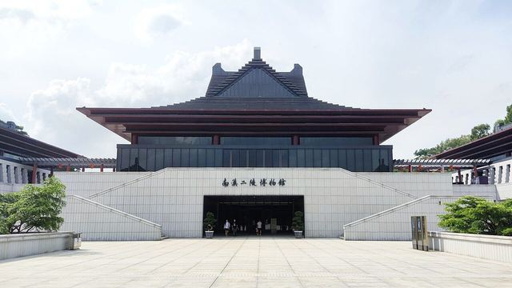
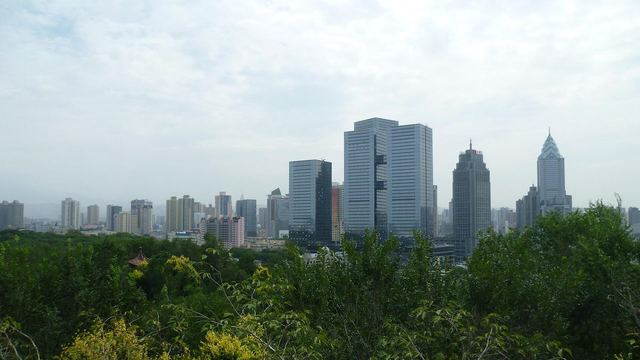
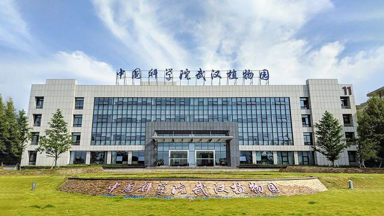
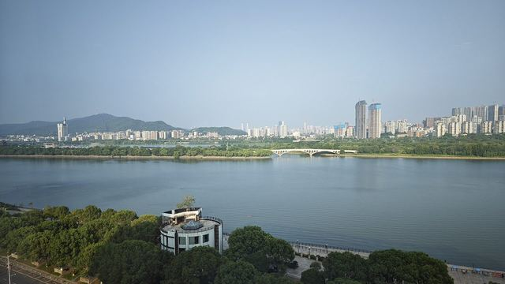
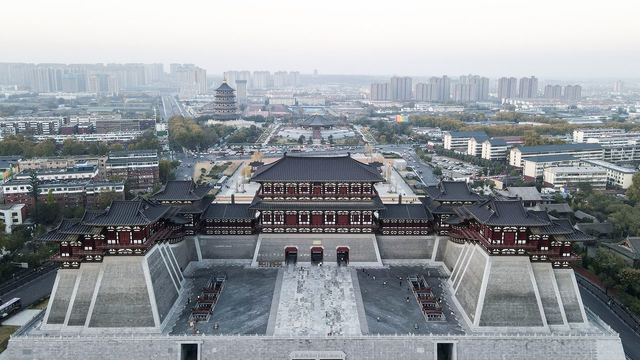
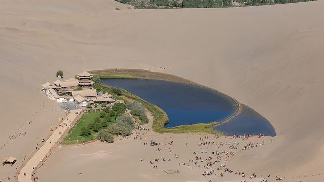

Travel A Yuan · 游记地图
222 座城市的玩法，整理成能直接出发的攻略
景点、美食、季节、路线与避坑一页看清；收藏城市、排行程、做自驾路书，全部在浏览器里完成。
- 城市攻略
- 222
- 省级地区
- 30
- 旅行主题
- 8
Pick up where you left off
继续上次的旅行准备
Editor’s Picks
编辑精选 · 人气目的地
左右滑动，挑一座城市开始你的行程。
Themes
按兴趣找去处
点击主题，自动在下方「城市快速筛选」里按关键词过滤。
Plan by needs
先定条件，再选城市
把地区、季节、天数、主题和交通方式组合起来，结果会同步到城市攻略列表。
City Finder
24 座精选城市
从全国不同区域挑选高频目的地，完整 222 城仍可通过全站搜索和目的地目录查找。
资料状态22 座待复核2 座已标注核验日期；价格、开放时间和预约规则仍请出行前复核。








没有完全符合的城市
可以先去掉一个条件，或换个关键词：
Toolkit
实用小工具
行程节奏、季节适宜与打包清单，帮你更快做决定。
生成自驾路书
选择所在地、目的地和天数，生成路线、逐日安排、预算与风险提醒。
开始规划 →行程节奏速算
按出行天数估算合理的城市数量与游玩节奏。
月份适宜速查
选择出行月份，看看当季适合的主题与去处。
打包清单生成
选择出行类型，生成对应的随身清单。
Research
资料更新规则
正文优先保留已归纳内容；易变信息以官方文旅、景区公告、博物馆官网和购票平台为准，社媒只用于发现高频路线、拍照点和避坑经验。